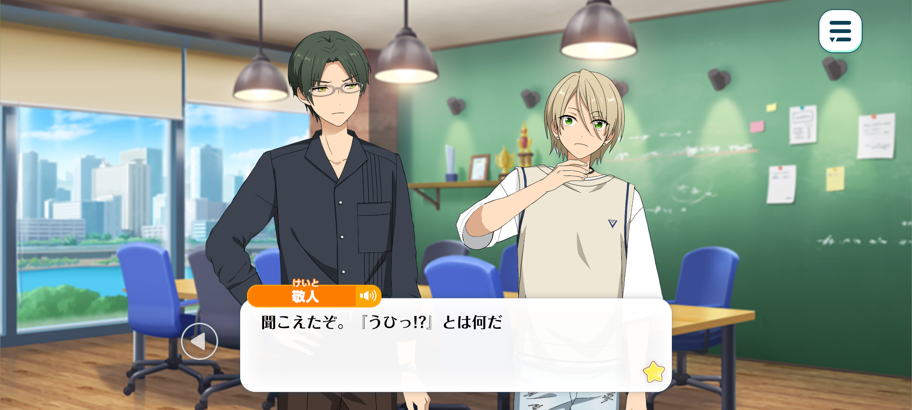
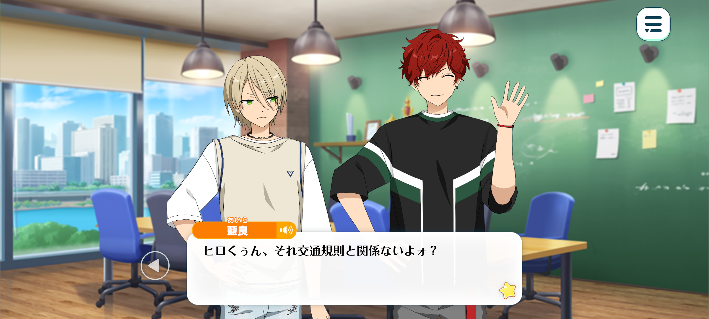
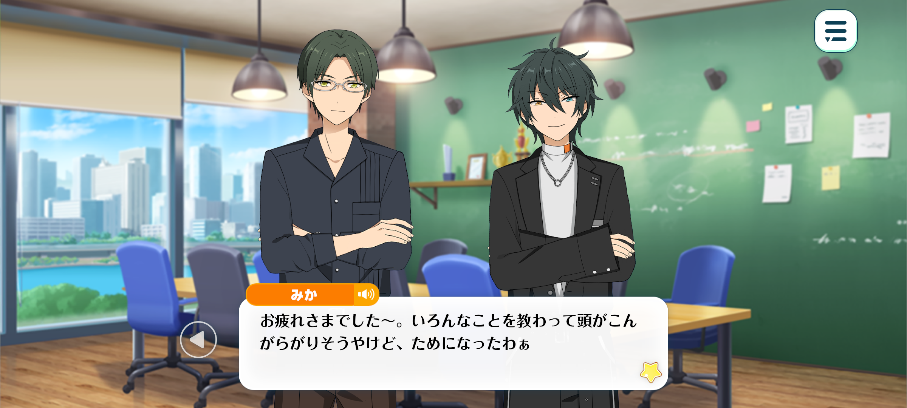

Scout! Keito Lecture
Summer Foam – Chapter 1


Season: Summer

Keito: —Our final lesson for today will be about traffic rules
Aira: Hyah!?
Keito: I heard that. What's with the "hyah"?
Aira: Ah, sorry! Something just occurred to me, that's all.
Mika: Nn? Shiratori-kun, what's up?
Aira: Wellll, you know that road in front of the dorms? There weren't any cars coming, so I just hurried across—
And then I saw Hasumi-senpai crossing at the pedestrian crossing...
Keito: Yes, I remember. Are you feeling a little guilty?
Breaking traffic rules is never acceptable, but you should take this as an opportunity to reflect on your actions. A moment's carelessness can lead to an accident.
And besides, we're idols. Anyone could see us, anywhere and at any time, so we should always be mindful of how we conduct ourselves.
Aira: I understand... I guess you're right. Even though idols have private lives too, fans would be disappointed if they saw us ignoring traffic lights.
I'll be more careful from now on. I'm really sorry.
Keito: There's no need to apologise to me. As long as you understand, that's enough.
Right, then. Does anyone have any other questions about traffic rules or road safety? If not, I'll move on to explaining the Road Traffic Act and the correct way to cross the road.
You have your hand up, Amagi. Go ahead.

Hiiro: Umu! Since I have the chance, there's something I've always wondered about traffic lights!
Why do we call them "blue lights" when they're green? Shouldn't they be called "green lights"?[1]
Aira: Hiiro-kun, that doesn't have anything to do with traffic laws, does it...?
Mika: But now that ya mention it, I wanna know too. I'm curious.
Keito: Hmm. The origins of the term "blue light"...
Yuzuru: ...If you would permit me, I believe I can explain.
When traffic lights were first introduced in Japan, they were actually referred to as green lights in official documents.
However, it seems that the newspaper article announcing their introduction described them as blue, and the name gradually caught on.
The fact that we also refer to things such as green juice, green vegetables, and green apples as "blue" in Japanese likely helped the term become established.
Eventually, they came to be legally referred to as "blue lights" as well.
Keito: Well, you certainly know your stuff.
Yuzuru: I have the Young Master to thank for that. When Bocchama was little, he would sometimes decide on a whim that he wanted to go outside for a walk.
He would take my hand, and we would stroll leisurely around the grounds together.
The colours of the traffic lights, what they looked like, what they meant... Just like Hiiro-sama today, he would ask me all sorts of questions, his eyes sparkling with curiosity.
Ah, my apologies for going off on a tangent. Do you understand now why they're called blue lights?
Hiiro: Yep, I understand! Both why they're called blue lights and how important Tori-kun is to Fushimi-senpai.
Yuzuru: Fufu, how embarrassing. Keito-sama, please continue.
Keito: Of course. Does anyone have any other questions?
...It seems not. In that case, let's begin. I'll explain the Road Traffic Act and how to cross the road safely.
Time: Some time later

Keito: —That concludes today's lesson.
Mika: Thanks for the lesson~. I've learnt so much that it's all gettin' jumbled up in my head, but I'm sure it'll do me good!
When you're walkin', you can see a car's headlights from quite a distance. But when you're behind the wheel, it's hard to spot pedestrians if they're wearin' dark clothes.
I'm gonna buy one of those reflective strips and stick it on my bag.
Hiiro: I shall do the same! Hasumi-senpai, thank you for holding these lectures. I always enjoy learning so many new things whenever I come here!
Keito: Hmm... I'm impressed by your enthusiasm for learning, Amagi. However, I'm a little concerned about how little you know about everyday life.
Do you not run into difficulties in your day-to-day life?
Hiiro: Nope! I'm quite familiar with the customs of city life!
Aira: He's definitely improved since I first met him, but he's still pretty clueless, isn't he~?
I'm sorry about him, Hasumi-senpai.
Hiiro: What are you apologising for, Aira...? Ah!
Fushimi-senpai, I'll help you tidy up, too! What would you like me to do?
Yuzuru: How thoughtful of you. I'm truly touched. However, please don't trouble yourself. Leave the tidying to me, and enjoy chatting with everyone else instead ♪
Hiiro: Okay... But you can't always do everything by yourself.
We're all members of the same circle, and we're friends. It's alright to let us help every now and then. I want to lend a hand!
Yuzuru: But…
Keito: You should accept Amagi's offer, Fushimi. Didn't we say we were to go out for lunch afterwards?
It'll be much quicker if we divide up the work. I'll help as well.
Yuzuru: ...Very well. Keito-sama, would you mind putting this equipment away?
Hiiro-sama, could you please throw this stack of papers away for me?
Hiiro: Umu! No matter what happens along the way, I shall make sure this paper is disposed of properly!
Aira: The bin's just outside in the corridor. I don't think anything's going to happen to you on the way there… What should Kagehira-senpai and I do?
Yuzuru: Ah, yes... In that case, would you two mind going to COCHI and finding us some seats?
Mika: Sure thing. See ya~.
Yuzuru: Certainly. I'll see you later.
Tidying up is one of my favourite pastimes, so I really don't mind doing it myself.
Still, there's something rather lovely about sharing the enjoyment of it with others... ♪
- in japanese, the word for a green traffic light uses the character for blue rather than green. 青信号 vs 緑信号